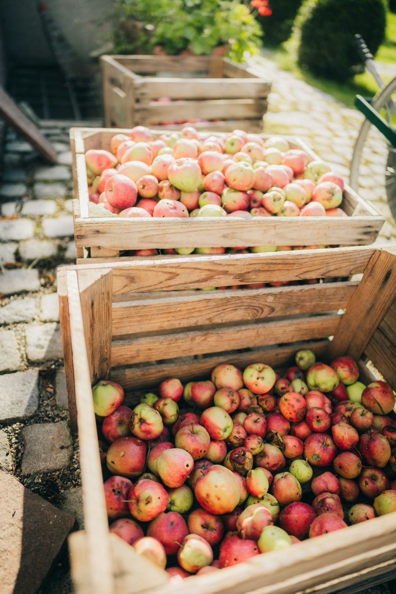

이랑골 청과 공판장
새벽 3시에 청과 경매를 시작합니다. 출하 정산액과 시세는 아래에서 계산할 수 있습니다.
오늘 · 10월 15일 (목) 03:00 기준
- 반입 차량
- 86대
- 반입 상자
- 9,420개
- 진행 중
- 2경매장 배추
- 1경매장 첫 경매
- 04:00 사과
- 다음 경매
- 03:40 무 (2경매장)
경매 시계 연습
가격이 0.1초마다 내려가고, 먼저 누른 가격이 낙찰가가 됩니다. 아래는 사과 상자 한 판의 보기입니다.
사과 (부사) 특 · 10 kg
65,000원 / 상자
시작가 65,000원 · 하한가 30,000원
낙찰

출하 정산
품목 · 등급 · 상자 수 · 예상 낙찰가를 넣으면 수수료 · 선별비 · 운임을 빼고 정산액을 계산합니다.
- 보기
- 사과 (부사) 특 · 120상자 × 10 kg × 5,000원/kg
- 낙찰 총액
- 6,000,000원
- 차감
- 342,000원
- 정산액
- 5,658,000원
오늘 시세
- 사과 (부사) 특
- 5,080원/kg 전날보다 80원 높음
- 배 (신고) 특
- 2,790원/kg 전날보다 10원 높음
- 배추 (가을배추) 특
- 1,130원/kg 전날보다 0원 높음
- 무 (가을무) 특
- 910원/kg 전날보다 20원 높음
10월 15일 (목) 03:00 기준 · 가상 기준표
반입 예약
- 반입 시간
- 00:00~02:30 · 30분 단위 5개 시각대
- 가장 빠른 날
- 10월 16일 (금) · 남은 차량 12대
- 예약 기간
- 10월 16일 (금)~11월 14일 (토)
- 휴장
- 일요일

알림
- 10월 17일 (토)단감 첫 별도 경매 · 1경매장 06:30
- 10월 19일 (월)하차장 C 바닥 보수 · 00:00~02:30 하차장 D 사용
- 11월 2일 (월)노지 감귤 상장 시작 · 1경매장 05:50